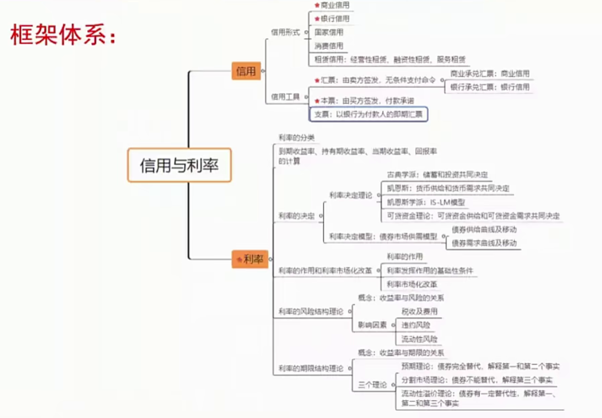
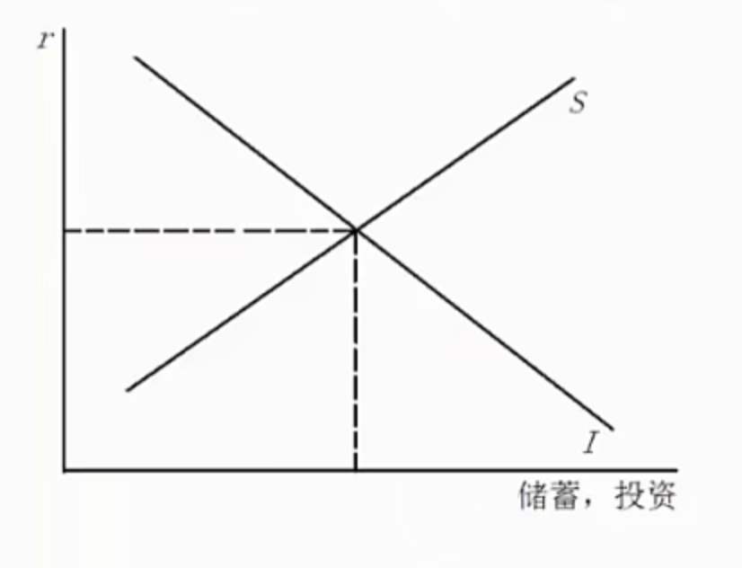
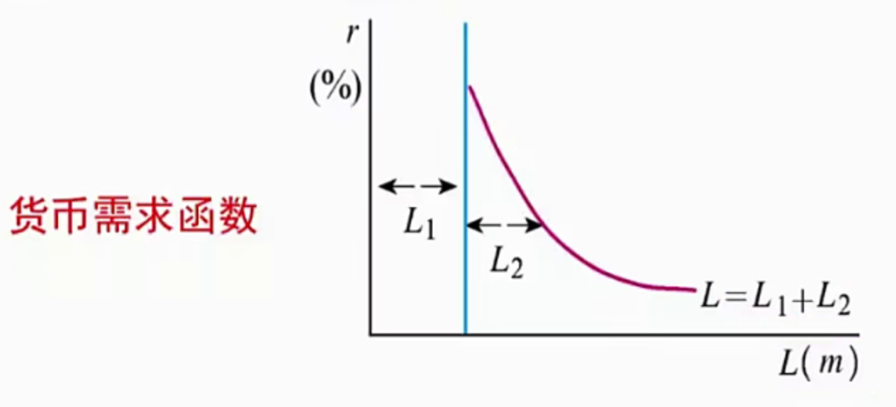
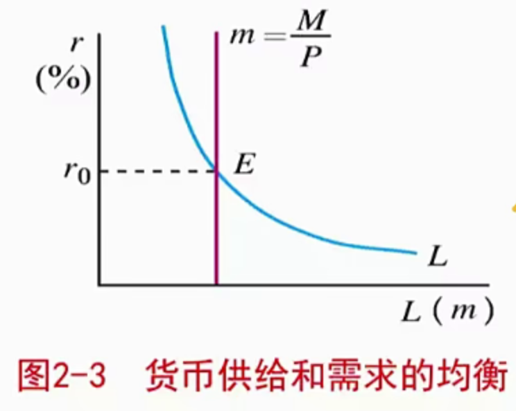
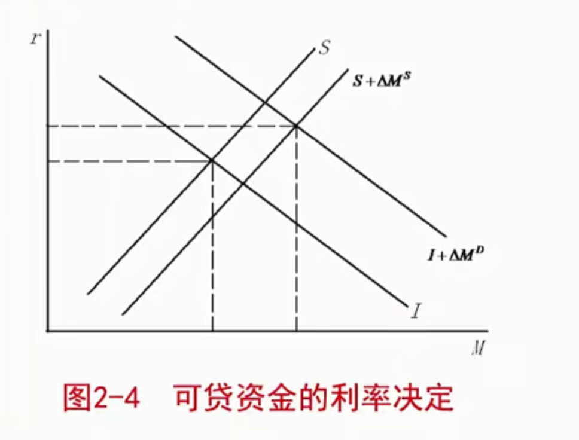

[toc]
第一节利率、货币的时间价值与利息
一、货币的时间价值
- 货币的时间价值是指同等金额的货币其现在的价值要大于其未来的价值。
- 货币的时间价值来源于对当前消费推迟的时间补偿。利息是货币时间价值的体现
二、利率及其分类
- 分类：
- 基准利率与一般利率🏅
- 实际利率与名义利率🏅
- 固定利率与浮动利率
- 年率、月率、日率
- 长期利率和短期利率
1
2
3
4
5
6
7
8
9
10
11
12
|
'1,'LPR（货款市场报价利率）之所以要完善贷款市场报价利率，原因主要有：
(1) 深化利率市场化改革
(2) 提高利率传导效率
(3) 降低实体经济融资成本
之前：参考贷款基准利率进行报价
现在：中期借贷便利（MLF）利率加点
中央银行👉商业银行👉社会
'2,' 名义利率和实际利率说明
(1) 物价不变动，不需要区分名义利率和实际利率。
（2) 物价有变动，要区分名义利率和实际利率。
（3) 我们说的利率，一般说的是名义利率
|
三、利息的计算
计算利率的途径有若干种，其中最重要的是到期收益率，也就是使债务工具所有未来回报的现值与其今天的价值相等的利率。
- 根据偿付时间安排的不同，信用市场工具
- 普通贷款
- 固定支付货款：等额本息
- 息票债券：有利率，到期还本金
- 贴现发行券：零息债券
1
2
3
4
5
6
|
某债券面值 100, 票面利率 8%,5 年期，发行价格为 105, 若张此时买进，持有三年后卖出，假设卖出价格为 117。
(1) 计算当期收益率。
(2) 计算持有期收益率。
(3) 计算到期收益率（按单利计算）。
(4) 说明到期收益率和执行价格的相关关系。【对外经济贸易大学 2015 金融硕士
|
第二节 利率决定理论
一、马克思的利率决定论
1
2
3
| 马克思认为，利息是贷出资本的资本家从借入资本的资本家那里分割出来的一部分剩余价值，而利润是剩余价值的转化形式。
利率取决于平均利润率。
在平均利润率与零之间，利率的高低取于两个因素：一是利润率；二是总利润在贷款人和借款人之间进行分配的比例。这一比例的确定主要取决于借双方的供求关系及其竟争
|
二、古典学派利率决定理论
观点：利率是由储蓄和投资共同决定的，投资是利率的递减函数，储蓄是利率的递增函数。

三、凯恩斯利率决定理论
凯恩斯认为，利率由货币的供给量和对货币的需求量所决定的。货币的实际供给量一般由中央银行加以控制，是一个外生变量，需要分析的主要是货币的需求。
- 流动性偏好理论
1
2
3
4
5
| 对货币的需求，又称“流动性偏好”，是指由于货币具有使用上的灵活性，人们宁肯以牺牲利息收入而储存不生息的货币来保持财富的心理倾向
货币需求动机分为以下三种：
(1) 交易动机
(2) 谨慎动机（预防性动机）
(3) 投机动机
|
- 货币需求函数
- L=L1+L2=L1(Y)+L2(r)
对货币的总需求函数可描述为
经济含义：当收入水平给定时，实际货币需求量是利率的减函数。

- 流动偏好陷阱‼️
流动性陷阱又称凯恩斯陷阱或流动偏好陷阱，是指当利率水平极低时，人们对货币需求趋于无限大，中央银行即使增加货币供给也不能降低利率，从而不能增加投资的一种经济状态，此时货币政策无效。
- 货币供求均衡和利率的决定
货币的供给和需求决定了均衡的短期利率水平。

四、可货资金理论的利率决定理论
1
2
3
4
5
6
7
8
9
10
11
| 可货资金理论由英国的罗伯逊和瑞典的俄林倡导。
他们一方面反对古典学派对货币因素的忽视而将利率的决定仅限于实际因素；
另一方面又批评凯恩斯只强调货币供求而完全否定实际因素在利率决定中的作用的观点。
按照可贷资金论，借贷资金的需求与供给均包括两个方面借贷资金需求来自某期间投资流量和该期间人们希望保有的货币余额；借贷资金供给则来自于同一期间的储蓄流量和该期间货币供给量的变动。
---
按照可贷资金理论，货币供需力量对比的变化足以改变利率，因此，利率在一定程度上是货币现象。
---题目
利率是金融学中核心变量之一，关于利率的決定理论也很多。其中，可贷资金理论试图完善古典学派的储蓄投资理论和凯恩斯流动性偏好利率理论。
(1) 请比较可贷资金理论与储蓄投资理论和凯恩斯流动性偏好理论的异同；
(2) 具体说明可贷资金理论相对于另外两种理论在哪些方面进行了完善和补充；
(3) 尽管各种利率决定理论强调利率的不同定因素，但是现代宏观经济运行中各国均强调中央银行对利率的决定（或者说影响）机制的重要性。请阐明中央银行影响利率的途径和机制，并说明这利率決定机制与已有理论是否存在联系？【中国人民大学 2012 金融硕士】
|
- 公式表示：
- DL=I+△MD
- SL=S+△MS
- 均衡条件：DL=SL

五、凯恩斯学派利率决定理论
- IS曲线(产品)
IS 曲线上任何一点都代表一定的利率和收入的组合，在这些组合下，投资和储蓄相等，从而产品市场是均衡的。由 Y=C+I+G得IS 曲线方程为Y=1−β1(Aˉ−dr)
因此，IS 曲线向右下方倾斜。
- LM曲线（货币）
LM 曲线是在短期物价水平固定的条件下，将满足货币市场均衡条件的收入和利率的各种组合点连接起来而形成的曲线。由表达式 m=M/p=L=kY-hr 得 LM 曲线的表达式为：r=hkY−hm
因此，LM 曲线一般向右上方倾斜。
- IS-LM 模型（结合）
两条曲线的交点即表示货币市场和产品市场同时均衡的利率和收入。
第三节 利率结构理论
一、利率的风险结构
利率的风险结构是指相同期限的金融工具与不同利率水平之间的关系，反映了这种金融工具所承担的风险大小对其收益率的影响。
- 三个因素：
二、利率期限结构及收益率曲线
1
2
3
4
5
6
7
8
|
债券的收益率曲线是指把期限不同、但风险、流动性和税收等因素都相同的债券的收益率连成的一条曲线。
1. 利率随时间波动
2. 短期利率低，收益率向上倾斜；短期利率高，收益率向下倾斜
3. 收益率曲线一般向上倾斜
看到现象->用理论模型解释现象
|

- 预期理论
1
2
3
4
5
6
|
预期理论认为到期期限不同的债券具有不同的利率的原因在于，在未来不同的时间段内，短期利率的预期值是不同的。
核心观点：'长期债券的利率等于当期利率与预期短期利率的平均数'。
(1) 能解释为什么存在向上、平缓和向下三种收益率曲线形态的存在：向上倾斜说明市场预期未来的短期利率将上升；向下倾斜说明市场预期未来的短期利率将下降；平坦说明市场预期未来短期利率的平均水平不发生变化。
(2) 能解释为什么不同期限的利率成同向变动。
|
- 分割市场理论
1
2
3
4
5
6
|
分割市场理论将不同到期期限的债券市场看做完全独立和相互分割的。到期期限不同的每种债券的利率取决于该债券的供给与需求。
能解释为什么收益率曲线通常是向上的：由于在通常情况下，长期债券相对于短期债券的需求较少，因此其价格较低，利率较高，所以典型的收益率曲线是向上倾斜的。
"债券需求供给>债券价格>利率"
|
- 流动性溢价理论
1
2
3
4
5
6
7
8
|
流动性溢价理论认为，长期债券的利率等于当期利率与预期短期利率的平均数，再加上一个流动性溢价（总是为正）。
流动性溢价理论关键性的假设是，不同到期期限的债券是可以相互替代的，这意味着某一债券的预期回报率的确会影响其他到期期限债券的预期回报率，但是，该理论承认投资者对不同期限债券的偏好。
假定流动补偿理论解释利率期限结构是合理的，已知下列条件未来五年内的一年期利率分别是：5%,6%,7%,7%,7% 未来 1 年至 5 年的流动补偿率分别是：0%,0.25%,0.5%,0.75%,1%
请回答：
(1)2年期至5年期的利率。
(2)画出收益曲线图。【对外经济贸易大学 2014 金融硕士】
|